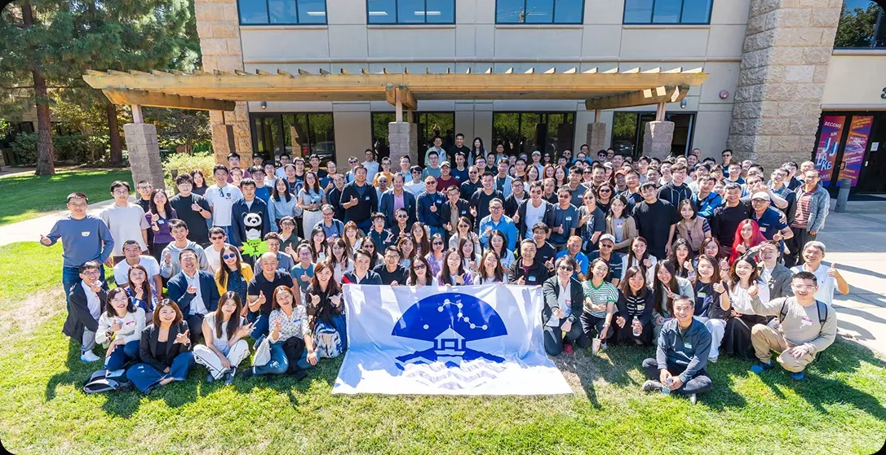

领航计划是面向华人社区的非营利成长项目（Lighthouse Mentorship, 501(c)(3)）， 由北加州清华校友会与两岸清华企业家协会共同发起，以导师、学员、志愿者为主体运作， 自 2015 年首期至今走过十二期。
每期九月开学、次年五月毕业。学员按职业阶段分入小组，每组约十位学员， 配对四位总监级别及以上的导师，每月至少一次深度主题交流； 此外还有面向全体学员的公开课、工作坊与社区活动。

科技行业正在经历深刻变化，AI 正在重新定义技术边界和行业格局，职业发展的路径也不再只有单一方向。 这些问题往往没有标准答案——领航希望搭建一个长期的互助共生平台， 让不同阶段的优秀人才与行业前辈在真实问题中不断学习，在持续连接中共同成长。
领航面向不同职业与创业阶段、不同文化与专业背景的人才开放报名。我们期待遇见对职业发展有明确思考的学习者、 真诚分享所知所思的交流者、致力提升影响力的管理者、积极投身创业的引领者，以及愿意参与社区建设的同行者。 欢迎来自 Tech、Product、Design、Marketing、Operations、Sales 等不同职能方向的申请者。
导师多由 Meta、Google、Apple、NVIDIA 等顶尖科技公司的 VP 与总监，以及活跃在华人圈的连续创业者与成功投资人组成。 既有大中小厂晋升之路的引路人，也有功成身退或持续投身的标杆创业者， 为处于不同职业阶段的学员提供量身定制的深度指导。